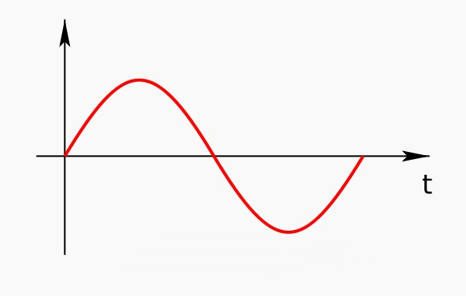
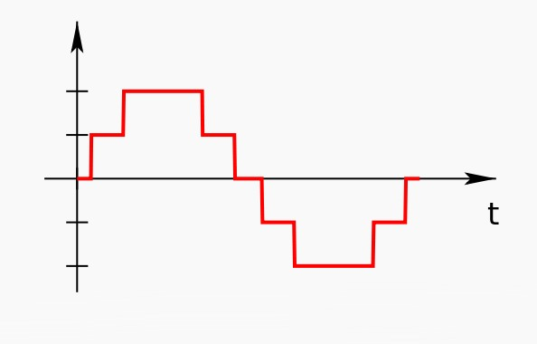
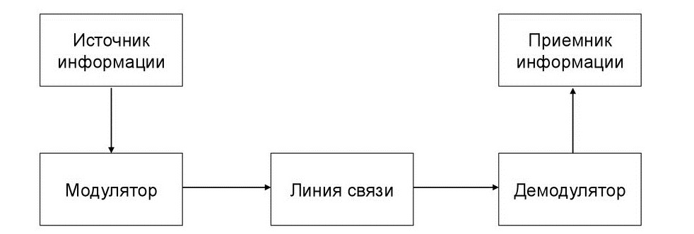
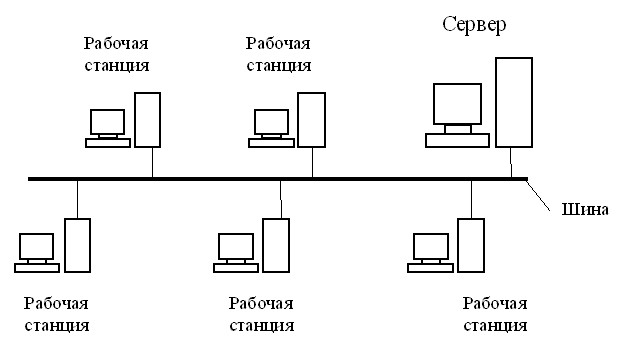
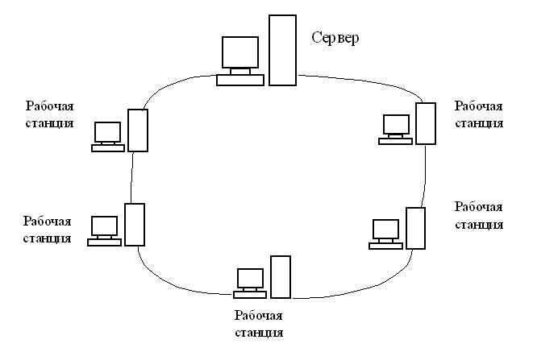
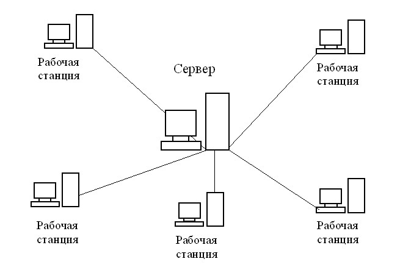

Обозначения и сокращения
Ad hoc – латинская фраза, означающая «к этому, для данного случая, для этой цели»;
ANSI – American National Standards Institute (Американский национальный институт стандартов);
CSMA/CD – Carrier Sense Multiple Access with Collision Detection (Множественный доступ с прослушиванием несущей и обнаружением коллизий)
FDDI – Fiber Distributed Data Interface (Волоконно-оптический распределенный интерфейс передачи данных);
HDLC – High-Level Data Link Control (бит-ориентированный протокол канального уровня сетевой модели OSI);
IEEE – Institute of Electrical and Electronics Engineers (Институт инженеров электротехники и электроники);
ITU-T – International Telecommunication Union – Telecommunication sector (Международный союз электросвязи – сектор электросвязи);
MAC – Media Access Control (Управление доступом к среде);
PCM – Pulse Code Modulation (Импульсно-кодовая модуляция);
PCI – Peripheral Component Interconnect (Взаимосвязь периферийных компонентов);
PPP – Point-to-Point Protocol (Двухточечный протокол канального уровня сетевой модели OSI);
RS-232 – Recommended Standard 232 (Стандарт физического уровня для асинхронного интерфейса);
SLIP – Serial Line Internet Protocol (Сетевой протокол канального уровня эталонной сетевой модели OSI);
UTP – Unshielded Twisted Pair (Неэкранированная витая пара);
VoIP – Voice Over Internet Protocol (Технология передачи голоса поверх протокола IP);
Wi-Fi – Wireless Fidelity (дословно переводится как «беспроводная привязанность»);
ДВ – Длинные волны;
КВ – Короткие волны;
СВ – Средние волны;
СВЧ – Сверхвысокие частоты;
УКВ – Ультракороткие волны;
ЭВМ – Электронно-вычислительная машина.
Введение
Большинство жителей современных городов ежедневно передают либо получают какие-либо данные. Это могут быть компьютерные файлы, телевизионная картинка, радиотрансляция – все, что представляет собой некую порцию полезной информации. Технологических методов передачи данных – огромное количество. Во время передачи данных могут возникать помехи и шумы, которые нарушают передачу данных, тем самым могут исказить передаваемые данные.
Мы начнем с разговора о передаче данных, что это такое, поговорим о типах передачи данных. После краткого рассмотрения типов передачи данных перейдем к типам каналов связи, в которых возникают помехи, а также о помехах и шумах соответственно.
1. Передача данных
Передача данных – физический перенос данных (цифрового сигнала) в виде сигналов от точки к точке или от точки к нескольким точкам средствами электросвязи по каналу передачи данных, как правило, для последующей обработки средствами вычислительной техники. Примерами подобных каналов могут служить медные провода, волоконно-оптические линии связи, беспроводные каналы передачи данных или запоминающее устройство.
Передача данных может быть аналоговой или цифровой, а также модулирован посредством аналоговой модуляции, либо посредством цифрового кодирования.
Аналоговый сигнал – сигнал данных, у которого каждый из представляющих параметров описывается функцией времени и непрерывным множеством возможных значений. [1, c. 36]

Рис. 1. Аналоговый сигнал.
Цифровой сигнал – сигнал данных, у которого каждый из представляющих параметров описывается функцией дискретного времени и конечным множеством возможных значений. [1, c. 36]

Рис. 2. Дискретный сигнал.
Хотя аналоговая связь является передачей постоянно меняющегося цифрового сигнала, цифровая связь является непрерывной передачей сообщений. Сообщения представляют собой либо последовательность импульсов, означающую линейный код (в полосе пропускания), либо ограничивается набором непрерывно меняющейся формы волны, используя метод цифровой модуляции. Такой способ модуляции и соответствующая ему демодуляция осуществляется модемным оборудованием.
Передаваемые данные могут быть цифровыми сообщениями, идущими из источника данных, например, из компьютера или от клавиатуры. Это может быть и аналоговый сигнал – телефонный звонок или видеосигнал, оцифрованный в битовый поток, используя импульсно-кодирующую модуляцию (PCM) или более расширенные схемы кодирования источника (аналого-цифровое преобразование и сжатие данных). Кодирование источника и декодирование осуществляется кодеком или кодирующим оборудованием.
2. Последовательная и параллельная данных
В телекоммуникации существует два способа передачи данных: последовательная передача данных и параллельная передача данных.
Под последовательной передачей данных понимают процесс передачи данных по одному биту за один промежуток времени, последовательно один за одним по одному коммуникационному каналу или компьютерной шине, в отличие от параллельной передачи данных, при которой несколько бит пересылаются одновременно по линии связи из нескольких параллельных каналов. Последовательная передача всегда используется при связи на дальние расстояния и в большинстве компьютерных сетей, так как стоимость кабеля и трудности синхронизации делают параллельную передачу данных неэффективной. При передаче данных на короткие расстояния последовательные компьютерные шины также используются всё чаще, так как и здесь недостатки параллельных шин перевешивают их преимущества в простоте. Развитие технологии для обеспечения целостности сигнала от передатчика до приёмника и достаточно высокая скорость передачи данных делают последовательные шины конкурентоспособными. Пример этому – переход от шины PCI к шине PCI Express.
Параллельной передачей в телекоммуникациях называется одновременная передача элементов сигнала одного символа или другого объекта данных. В цифровой связи параллельной передачей называется одновременная передача соответствующих элементов сигнала по двум или большему числу путей. Используя множество электрических проводов можно передавать несколько бит одновременно, что позволяет достичь более высоких скоростей передачи, чем при последовательной передаче. Этот метод применяется внутри компьютера, например, во внутренних шинах данных, а иногда и во внешних устройствах, таких, как принтеры. Основной проблемой при этом является «перекос», потому что провода при параллельной передаче имеют немного разные свойства (не специально), поэтому некоторые биты могут прибыть раньше других, что может повредить сообщение. Бит чётности может способствовать сокращению ошибок. Тем не менее электрический провод при параллельной передаче данных менее надёжен на больших расстояниях, поскольку передача нарушается с гораздо более высокой вероятностью. [2, c. 126]
3. Типы каналов связи
Канал связи – система технических средств и среда распространения сигналов для односторонней передачи данных (информации) от отправителя (источника) к получателю (приёмнику). В случае использования проводной линии связи, средой распространения сигнала может являться оптическое волокно или витая пара. Канал связи является составной частью канала передачи данных. [3, c. 87]

Рис. 3. Каналы связи.
Каналы связи бывают следующих типов:
– симплекс;
– дуплекс;
– полудуплекс;
– точка-точка;
– многоточечная.
Симплексная связь – связь, при которой информация передаётся только в одном направлении. Существуют два определения симплексной связи. По определению ANSI схема симплексной связи позволяет передавать сигналы всегда только в одном направлении. Такая связь используется в радио-, теле- и спутниковом вещании, поскольку нет необходимости передавать какие-либо данные обратно на радиопередающую станцию. Другой пример симплексной связи – однонаправленная связь между пусковой установкой и ракетой с радиокомандным управлением, когда команды передаются ракете, но приём информации от ракеты не предусмотрен.
По определению ITU-T схема симплексной связи позволяет передавать сигналы в каждый момент времени только в одном направлении. В другой момент времени сигналы могут передаваться в противоположном направлении. Такой вид связи обычно называют полудуплексной связью. Примером данного вида связи могут служить сетевые карты, соединённые коаксиальным кабелем и многие виды технологической радиосвязи.
Полудуплекс – режим, при котором, в отличие от дуплексного, передача ведётся по одному каналу связи в обоих направлениях, но с разделением по времени (в каждый момент времени передача ведётся только в одном направлении). Полная скорость обмена информацией по каналу связи в данном режиме имеет вдвое меньшее значение, по сравнению с дуплексом.
Разделение во времени вызвано тем, что передающий узел в конкретный момент времени полностью занимает канал передачи. Явление, когда несколько передающих узлов пытаются в один и тот же момент времени осуществлять передачу, называется коллизией и при методе управления доступом CSMA/CD считается нормальным, хотя и нежелательным явлением.
Этот режим применяется тогда, когда в сети используется коаксиальный кабель или в качестве активного оборудования, используются концентраторы.
В зависимости от аппаратного обеспечения одновременный приём/передача в полудуплексном режиме может быть или физически невозможен (например, в связи с использованием одного и того же контура для приёма и передачи в рациях) или приводить к коллизиям.
Дуплекс – способ связи с использованием приёмопередающих устройств (модемов, сетевых карт, раций, телефонных аппаратов и др.).
Реализующее дуплексный способ связи устройство может в любой момент времени и передавать, и принимать информацию. Передача и приём ведутся устройством одновременно по двум физически разделённым каналам связи (по отдельным проводникам, на двух различных частотах и др. за исключением разделения во времени – поочерёдной передачи). Пример дуплексной связи – разговор двух людей (корреспондентов) по городскому телефону: каждый из говорящих в один момент времени может и говорить, и слушать своего корреспондента. Дуплексный способ связи иногда называют полнодуплексным.
Сеть из точки в точку, соединение точка-точка – простейший вид компьютерной сети, при котором два компьютера соединяются между собой напрямую через коммуникационное оборудование. Достоинством такого вида соединения является простота и дешевизна, недостатком – соединить таким образом можно не более двух компьютеров, в отличие от таких методов передачи данных, как широковещание и точка-многоточка.
Часто используется в случаях, когда необходимо быстро передать информацию с одного компьютера, например, ноутбука, на другой.
Если две точки находятся в непосредственной близости, то связь обычно осуществляется через RS232 или подобный протокол (см. Нуль-модемное соединение). При соединении на расстоянии используются модемы.
Для соединений точка-точка используются протоколы SLIP, PPP, HDLC и другие.
Современное использование термина «сеть точка-точка» относится к фиксированным точкам беспроводного доступа Интернета или VoIP через радиоволны в многогигагерцевом диапазоне, а также такие технологии, как лазерные телекоммуникации.
Многоточечный канал связи бывает следующих типов:
– шина;
– кольцо;
– звезда;
– ячеистая топлогия;
– беспроводная сеть.
Топология типа общая шина, представляет собой общий кабель (называемый шина или магистраль), к которому подсоединены все рабочие станции. На концах кабеля находятся терминаторы, для предотвращения отражения сигнала.

Рис. 4. Топология типа общая шина.
Передача информации в данной сети происходит следующим образом. Данные в виде электрических сигналов передаются всем компьютерам сети. Однако информацию принимает только тот компьютер, адрес которого соответствует адресу получателя. Причем в каждый момент времени только один компьютер может вести передачу данных.
Достоинства:
– Небольшое время установки сети;
– Дешевизна (требуется кабель меньшей длины и меньше сетевых устройств);
– Простота настройки;
– Выход из строя одной рабочей станции не отражается на работе всей сети.
Недостатки:
– Неполадки в сети, такие как обрыв кабеля или выход из строя терминатора, полностью блокируют работу всей сети;
– Затрудненность выявления неисправностей;
– С добавлением новых рабочих станций падает общая производительность сети.
Шинная топология представляет собой топологию, в которой все устройства локальной сети подключаются к линейной сетевой среде передачи данных. Такую линейную среду часто называют каналом, шиной или трассой. Каждое устройство (например, рабочая станция или сервер) независимо подключается к общему кабелю-шине с помощью специального разъёма. Шинный кабель должен иметь на конце согласующий резистор, или терминатор, который поглощает электрический сигнал, не давая ему отражаться и двигаться в обратном направлении по шине.
Типичная шинная топология имеет простую структуру кабельной системы с короткими отрезками кабелей. Поэтому по сравнению с другими топологиями стоимость её реализации невелика. Однако низкая стоимость реализации компенсируется высокой стоимостью управления. Фактически, самым большим недостатком шинной топологии является то, что диагностика ошибок и изолирование сетевых проблем могут быть довольно сложными, поскольку здесь имеются несколько точек концентрации. Так как среда передачи данных не проходит через узлы, подключенные к сети, потеря работоспособности одного из устройств никак не сказывается на других устройствах. Хотя использование всего лишь одного кабеля может рассматриваться как достоинство шинной топологии, однако оно компенсируется тем фактом, что кабель, используемый в этом типе топологии, может стать критической точкой отказа. Другими словами, если шина обрывается, то ни одно из подключенных к ней устройств не сможет передавать сигналы.
Кольцо – топология, в которой каждый компьютер соединён линиями связи только с двумя другими: от одного он только получает информацию, а другому только передаёт. На каждой линии связи, как и в случае звезды, работает только один передатчик и один приёмник. Это позволяет отказаться от применения внешних терминаторов.

Рис. 5. Топология типа кольцо.
Работа в сети кольца заключается в том, что каждый компьютер ретранслирует (возобновляет) сигнал, то есть выступает в роли повторителя, потому затухание сигнала во всём кольце не имеет никакого значения, важно только затухание между соседними компьютерами кольца. Чётко выделенного центра в этом случае нет, все компьютеры могут быть одинаковыми. Однако достаточно часто в кольце выделяется специальный абонент, который управляет обменом или контролирует обмен. Понятно, что наличие такого управляющего абонента снижает надёжность сети, потому что выход его из строя сразу же парализует весь обмен.
Компьютеры в кольце не являются полностью равноправными (в отличие, например, от шинной топологии). Одни из них обязательно получают информацию от компьютера, который ведёт передачу в этот момент, раньше, а другие – позже. Именно на этой особенности топологии и строятся методы управления обменом по сети, специально рассчитанные на «кольцо». В этих методах право на следующую передачу (или, как ещё говорят, на захват сети) переходит последовательно к следующему по кругу компьютеру.
Подключение новых абонентов в «кольцо» обычно совсем безболезненно, хотя и требует обязательной остановки работы всей сети на время подключения. Как и в случае топологии «шина», максимальное количество абонентов в кольце может быть достаточно большое (1000 и больше). Кольцевая топология обычно является самой стойкой к перегрузкам, она обеспечивает уверенную работу с самыми большими потоками переданной по сети информации, потому что в ней, как правило, нет конфликтов (в отличие от шины), а также отсутствует центральный абонент (в отличие от звезды).
В кольце, в отличие от других топологий (звезда, шина), не используется конкурентный метод посылки данных, компьютер в сети получает данные от стоящего предыдущим в списке адресатов и перенаправляет их далее, если они адресованы не ему. Список адресатов генерируется компьютером, являющимся генератором маркера. Сетевой модуль генерирует маркерный сигнал (обычно порядка 2–10 байт во избежание затухания) и передаёт его следующей системе (иногда по возрастанию MAC-адреса). Следующая система, приняв сигнал, не анализирует его, а просто передаёт дальше. Это так называемый нулевой цикл.
Последующий алгоритм работы таков – пакет данных, передаваемый отправителем адресату, начинает следовать по пути, проложенному маркером. Пакет передаётся до тех пор, пока не доберётся до получателя.
Достоинства:
– Простота установки;
– Практически полное отсутствие дополнительного оборудования;
– Возможность устойчивой работы без существенного падения скорости передачи данных при интенсивной загрузке сети, поскольку использования маркера исключает возможность возникновения коллизий.
Недостатки:
– Выход из строя одной рабочей станции и другие неполадки отражаются на работоспособности всей сети;
– Сложность конфигурирования и настройки;
– Сложность поиска неисправностей;
– Необходимость иметь две сетевые платы на каждой рабочей станции;
– Добавление или удаление станции требует временной остановки работы сети.
Наиболее широкое применение получила в волоконно-оптических сетях. Используется в стандартах FDDI, Token ring.
Звезда – базовая топология компьютерной сети, в которой все компьютеры сети присоединены к центральному узлу (обычно коммутатор), образуя физический сегмент сети. Подобный сегмент сети может функционировать как отдельно, так и в составе сложной сетевой топологии (как правило, «дерево»). Весь обмен информацией идет исключительно через центральный компьютер, на который таким способом возлагается очень большая нагрузка, поэтому ничем другим, кроме сети, он заниматься не может. Как правило, именно центральный компьютер является самым мощным, и именно на него возлагаются все функции по управлению сетью.

Рис. 6. Топология звезда.
Рабочая станция, с которой необходимо передать данные, отсылает их на концентратор. В определённый момент времени только одна машина в сети может пересылать данные, если на концентратор одновременно приходят два пакета, обе посылки оказываются не принятыми и отправителям нужно будет подождать случайный промежуток времени, чтобы возобновить передачу данных. Этот недостаток отсутствует на сетевом устройстве более высокого уровня – коммутаторе, который, в отличие от концентратора, подающего пакет на все порты, подает лишь на определенный порт – получателю. Одновременно может быть передано несколько пакетов. Сколько – зависит от коммутатора. Данная топология применяется в локальных сетях с архитектурой 10Base-T Ethernet.
Топология типа звезда может быть двух типов:
– Активная;
– Пассивная.
Активная звезда – в центре сети находится сервер (рис. 6).
Пассивная звезда – в центре сети с данной топологией содержится концентратор или коммутатор. Все пользователи в сети равноправны.
Достоинства:
– Выход из строя одной рабочей станции не отражается на работе всей сети в целом;
– Легкий поиск неисправностей и обрывов в сети;
– Высокая производительность сети (при условии правильного проектирования);
– Гибкие возможности администрирования;
– Низкая стоимость.
Недостатки:
– Выход из строя центрального концентратора обернется неработоспособностью сети (или сегмента сети) в целом;
– Для прокладки сети зачастую требуются большие кабеля, чем для большинства других топологий;
– Конечное число рабочих станций в сети (или сегменте сети) ограниченно количеством портов в центральном концентраторе.
Одна из наиболее распространённых топологий, поскольку достаточно легка в обслуживании. В основном используется в сетях, где используется кабель витая пара UTP категории 3 или 5.
Ячеистая топология – сетевая топология компьютерной сети, построенная на принципе ячеек, в которой рабочие станции сети соединяются друг с другом и способны принимать на себя роль коммутатора для остальных участников. Данная организация сети является достаточно сложной в настройке, однако при такой топологии реализуется высокая отказоустойчивость. Как правило, узлы соединяются по принципу «каждый с каждым». Таким образом, большое количество связей обеспечивает широкий выбор маршрута следования трафика внутри сети – следовательно, обрыв одного соединения не нарушит функционирования сети в целом.
Рабочая станция, с которой необходимо передать данные, отсылает их на концентратор. В определённый момент времени только одна машина в сети может пересылать данные, если на концентратор одновременно приходят два пакета, обе посылки оказываются не принятыми и отправителям нужно будет подождать случайный промежуток времени, чтобы возобновить передачу данных. Этот недостаток отсутствует на сетевом устройстве более высокого уровня – коммутаторе, который, в отличие от концентратора, подающего пакет на все порты, подает лишь на определенный порт – получателю. Одновременно может быть передано несколько пакетов. Сколько – зависит от коммутатора. Данная топология применяется в локальных сетях с архитектурой 10Base-T Ethernet.
Сетевая топология – это конфигурация графа, вершинам которого соответствуют конечные узлы сети (компьютеры) и коммуникационное оборудование (маршрутизаторы), а рёбрам – физические или информационные связи между вершинами.
Сетевая топология может быть:
– Физической – описывает реальное расположение и связи между узлами сети;
– Логической – описывает хождение сигнала в рамках физической топологии;
– Информационной – описывает направление потоков информации, передаваемых по сети;
– Управление обменом – это принцип права на пользование сетью.
Беспроводная вычислительная сеть – вычислительная сеть, основанная на беспроводном (без использования кабельной проводки) принципе, полностью соответствующая стандартам для обычных проводных сетей (например, Ethernet). В качестве носителя информации в таких сетях могут выступать радиоволны СВЧ-диапазона.
Существует два основных направления применения беспроводных компьютерных сетей:
– Работа в замкнутом объеме (офис, выставочный зал и т.д);
– Соединение удаленных локальных сетей (или удаленных сегментов локальной сети).
Для организации беспроводной сети в замкнутом пространстве применяются передатчики со всенаправленными антеннами. Стандарт IEEE 802.11 определяет два режима работы сети – Ad-hoc и клиент-сервер. Режим Ad-hoc (иначе называемый «точка-точка») – это простая сеть, в которой связь между станциями (клиентами) устанавливается напрямую, без использования специальной точки доступа. В режиме клиент-сервер беспроводная сеть состоит, как минимум, из одной точки доступа, подключенной к проводной сети, и некоторого набора беспроводных клиентских станций. Поскольку в большинстве сетей необходимо обеспечить доступ к файловым серверам, принтерам и другим устройствам, подключенным к проводной локальной сети, чаще всего используется режим клиент-сервер. Без подключения дополнительной антенны устойчивая связь для оборудования IEEE 802.11b достигается в среднем на следующих расстояниях: открытое пространство – 500 м, комната, разделенная перегородками из неметаллического материала – 100 м, офис из нескольких комнат – 30 м. Следует иметь в виду, что через стены с большим содержанием металлической арматуры (в железобетонных зданиях таковыми являются несущие стены) радиоволны диапазона 2,4 ГГц иногда могут вообще не проходить, поэтому в комнатах, разделенных подобной стеной, придется ставить свои точки доступа.
Для соединения удаленных локальных сетей (или удаленных сегментов локальной сети) используется оборудование с направленными антеннами, что позволяет увеличить дальность связи до 20 км (а при использовании специальных усилителей и большой высоте размещения антенн – до 50 км). Причем в качестве подобного оборудования могут выступать и устройства Wi-Fi, нужно лишь добавить к ним специальные антенны (конечно, если это допускается конструкцией). Комплексы для объединения локальных сетей по топологии делятся на «точку-точку» и «звезду». При топологии «точка-точка» (режим Ad-hoc в IEEE 802.11) организуется радиомост между двумя удаленными сегментами сети. При топологии «звезда» одна из станций является центральной и взаимодействует с другими удаленными станциями. При этом центральная станция имеет всенаправленную антенну, а другие удаленные станции – однонаправленные антенны. Применение всенаправленной антенны в центральной станции ограничивает дальность связи дистанцией примерно 7 км. Поэтому, если требуется соединить между собой сегменты локальной сети, удаленные друг от друга на расстояние более 7 км, приходится соединять их по принципу «точка-точка». При этом организуется беспроводная сеть с кольцевой или иной, более сложной топологией.
Мощность, излучаемая передатчиком точки доступа или же клиентской станции, работающей по стандарту IEEE 802.11, не превышает 0,1 Вт, но многие производители беспроводных точек доступа ограничивают мощность лишь программным путём, и достаточно просто поднять мощность до 0,2-0,5 Вт. Для сравнения – мощность, излучаемая мобильным телефоном, на порядок больше (в момент звонка - до 2 Вт). Поскольку, в отличие от мобильного телефона, элементы сети расположены далеко от головы, в целом можно считать, что беспроводные компьютерные сети более безопасны с точки зрения здоровья, чем мобильные телефоны.
Если беспроводная сеть используется для объединения сегментов локальной сети, удаленных на большие расстояния, антенны, как правило, размещаются за пределами помещения и на большой высоте.
4. Сеть передачи данных
Сеть передачи данных – совокупность трёх и более оконечных устройств (терминалов) связи, объединённых каналами передачи данных и коммутирующими устройствами (узлами сети), обеспечивающими обмен сообщениями между всеми оконечными устройствами.
Существуют следующие виды сетей передачи данных:
– Телефонные сети – сети, в которых оконечными устройствами являются простые преобразователи сигнала между электрическим и видимым или слышимым;
– Компьютерные сети – сети, конечными устройствами которых являются компьютеры.
По принципу коммутации сети делятся на:
– Сети с коммутацией каналов – для передачи между оконечными устройствами выделяется физический или логический канал, по которому возможна непрерывная передача информации. Сетью с коммутацией каналов является, например, телефонная сеть. В таких сетях возможно использование узлов весьма простой организации, вплоть до ручной коммутации, однако недостатком такой организации является неэффективное использование каналов связи, если поток информации непостоянный и мало предсказуемый. Типичным примером являются ранние телефонные сети. Абонент должен попросить оператора соединить его с другим абонентом, подключённым к тому же коммутатору или иному коммутатору через линию связи (и другому оператору). В любом случае, конечным результатом было физическое электрическое соединение между телефонными аппаратами абонентов в течение всего разговора. Проводник, задействованный для подключения, не мог быть использован для передачи других разговоров в это время, даже если абоненты на самом деле не разговаривали и на линии была тишина.
– Сети с коммутацией пакетов – данные между конечными устройствами в такой сети передаются короткими посылками – пакетами, которые коммутируются независимо. По такой схеме построено подавляющее большинство компьютерных сетей. Этот тип организации весьма эффективно использует каналы передачи данных, но требует более сложного оборудования узлов, что и определило использование почти исключительно в компьютерной среде.
5. Помехи и искажения в канале
При передаче сигнала по линии связи он искажается и воспроизводится с некоторой ошибкой. Причиной таких ошибок являются искажения сигналов в канале связи и помехи, воздействующие на сигнал.
Искажения часто обусловлены известными характеристиками линии связи и тогда могут быть устранены путем надлежащей коррекции.
Помехи заранее неизвестны и поэтому не могут быть полностью устранены. Они весьма разнообразны как по своему происхождению, так и по физическим свойствам.
Можно дать следующую классификацию помех по месту их возникновения:
– Атмосферные помехи;
– Промышленные помехи (индустриальные помехи);
– Космические помехи;
– Электризационные помехи;
– Помехи посторонний каналов связи;
– Внутренние шумы.
Атмосферные помехи обусловлены электрическими процессами в атмосфере и, прежде всего, грозовыми разрядами. Энергия этих помех сосредоточена, главным образом, в области ДВ и СВ.
Промышленные помехи возникают из-за резких изменений тока в электрических цепях всевозможных электроустановок. К ним относятся помехи от электротранспорта, электрических моторов, медицинских установок, систем зажигания двигателей и т.д.
Космические помехи создаются радиоизлучением внеземных источников. Они создают общий шумовой фон и в наибольшей степени проявляются на УКВ.
Электризационные помехи, часто возникающие во время пурги или песчаной бури, создаются наэлектризованными снежными частицами или песчинками. Эти помехи возникают при скорости ветра свыше 5,5 м/с и ощутимы на частотах ниже 15 МГц.
Помехи посторонних каналов связи – обусловлены работой посторонних радиостанций. С учетом источника происхождения их называют также стационарными. Этот вид помех наиболее характерен для КВ диапазоне.
В зависимости от характера изменения во времени различают флуктуационные, импульсные (сосредоточенные во времени) и узкополосные (сосредоточенные по спектру) помехи.
Флуктуационная помеха представляет собой непрерывное колебание, меняющееся случайным образом. Часто она описывается нормальным законом распределения. Быстрое изменение во времени позволяет заменить реальные флюктуационные помехи так называемым белым шумом – процессом с постоянным спектром.
Импульсные помехи представляет собой случайную последовательность коротких сигналов, обычно следующих редко, что реакция приемника на текущий импульс успевает уменьшится до нуля к моменту появления очередного импульса. Типичными примерами таких помех являются сигналы, создаваемые разрядами молний или искрением контактов в электрических двигателях.
Сосредоточенные по спектру помехи занимают сравнительно узкую полосу частот, существенно меньшую полосы частот сигнала. Чаще всего они обусловлены сигналами посторонних радиостанций, или излучениями промышленных или медицинских генераторов высокой частоты различного назначения.
В зависимости от характера воздействия различают аддитивную помеху n(t), суммирующуюся с полезным сигналом и мультипликативную помеху μ(t)
U(t)=S(t)+n(t) (5.1)
где S(t) – переданный сигнал, n(t) – аддитивная помеха;
мультипликативная помеха μ(t):
U(t)=μ(t)×S(t) (5.2)
где μ(t) – некоторая случайная функция, отражающая изменение во времени коэффициента передачи канала связи.
В реальных системах связи часто действуют как аддитивная, так и мультипликативная помехи:
U(t)=μ(t)×S(t)+n(t) (5.3)
Заключение
Итак, средой передачи информации называются те линии связи (или каналы связи), по которым производится обмен информацией между компьютерами. В подавляющем большинстве компьютерных сетей (особенно локальных) используются проводные или кабельные каналы связи, хотя существуют и беспроводные сети, которые сейчас находят все более широкое применение, особенно в портативных компьютерах.
Сети передачи данных являются одним из самых важных инструментов для развития бизнеса. В нынешнее время они играют весомую роль в обеспечении взаимодействия всех сотрудников внутри самой компании, офисов, которые расположены не только лишь вблизи, но и на расстояние.
Помехами называют напряжение (ток) постороннего происхождения появляющееся в каналах связи и ограничивающее дальность передачи полезных сигналов. Помехи, частоты которых лежат в полосе звуковых частот, создают слышимый в телефоне или громкоговорителе шум, снижающий качество связи или вещания. Такие помехи называют шумами. Высокочастотные помехи, проходя через аппаратуру канала связи, также могут проявляться виде шумов. Помехи в полосе видеочастот ухудшают изображение на экране кинескопа телевизора.
В зависимости от источника возникновения и от характера их воздействия помехи делятся на собственные помехи канала связи, взаимные, создаваемые влиянием каналов друг на друга, и внешние (наводки) от посторонних электромагнитных полей.
Источниками шумов и помех принято считать: индустриальные помехи; наводки от соседних цепей; разъемы низкого качества; реактивное сопротивление кабеля и низкое качество кабеля; неточное согласование кабеля с волновым сопротивлением передатчика и приемника; питание от разных фаз и наличие «петель заземления».
Список используемой литературы
1. ГОСТ 17657–79 «Передача данных. Термины и определения.»;
2. Теория электрической связи: учебное пособие / К.К. Васильев, В.А. Глушков, А.В. Дормидонтов, А.Г. Нестеренко; под общ. ред. К.К. Васильева. – Ульяновск: УлГТУ, 2008. – 452 с.;
3. Архитектура вычислительных систем: учебное пособие для вузов. - М.: МГТУ им. Н.Э. Баумана, 2009;
4. Мелехин В.Ф. Вычислительные машины, системы и сети: учебник для вузов. - М.: Академия, 2010;
5. Исаченко О.В. Программное обеспечение компьютерных сетей. – М.: Академия, 2014;
6. В. Олифер, Н. Олифер. Компьютерные сети. Принципы, технологии, протоколы. — Питер, 2013. — С. 55. — 944 с.;
7. Максим Киселев, Ячеистые сети / «Экспресс Электроника», CITForum.
8. Бертсекас Д., Галлагер Р. Сети передачи данных / пер с англ. – М.: Мир, 2004. – 562 c.
9. Архитектура вычислительных систем: учебное пособие для вузов.- М.: МГТУ им. Н.Э. Баумана, 2009;
10. Чекмарев Ю.В. Вычислительные системы, сети и коммуникации - М.: ДМК Пресс, 2009.